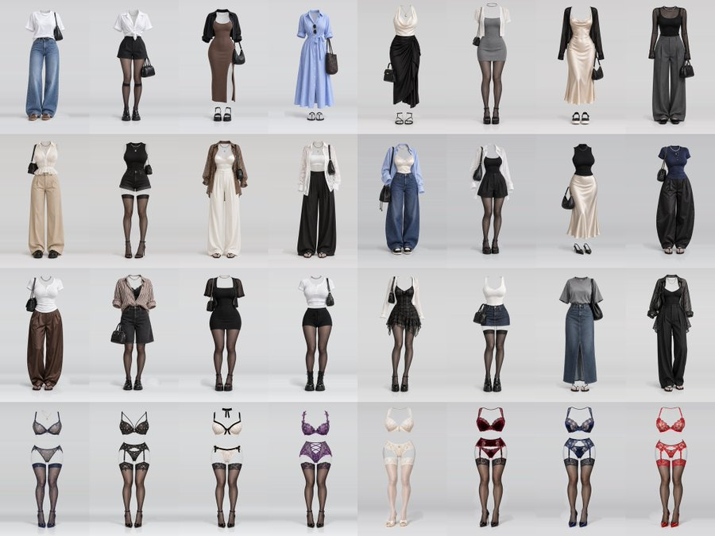
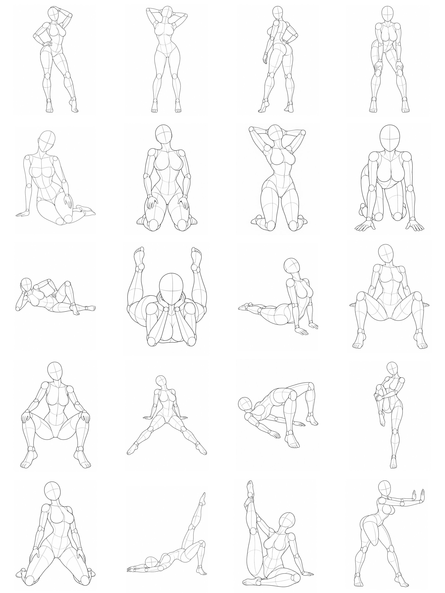

联合使用案例：人物、穿搭与动作分别指定
视频展示将脸部、服装、姿势作为不同参考输入的过程。两张合集用于浏览可选素材；实际创作时各挑选一套服装与一个姿势，并为每张参考图说明用途。
思路参考：半格（@ai_bange）的联合使用案例 · 完整中文操作指南


如何准备一组联合参考
- 从脸型库选择人物五官与发型参考。
- 从服装库选择单套衣装 PNG，说明只参考服装。
- 从姿势库选择动作与视角，说明身体姿态。
- 需要空间参照且工具支持时，从深度库选择同编号、同视角的 PNG。
在所用 AI 工具中分别指定各图职责，再补充背景、光线与景别。生成后检查人物外观、衣装细节、动作与遮挡。具体输入能力及效果取决于工具，视频不代表本站的生成服务。
素材与来源
本页视频及两张参考合集由用户提供。联合使用思路参考半格的原帖；服装与姿势原始素材作者为 ギア（@giaaibusi），脸型参考原站作者为 あぎ（@agi_aibusi）。各类素材适用原来源使用条件，详见版权与致谢。